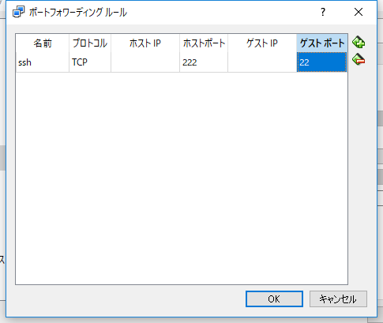
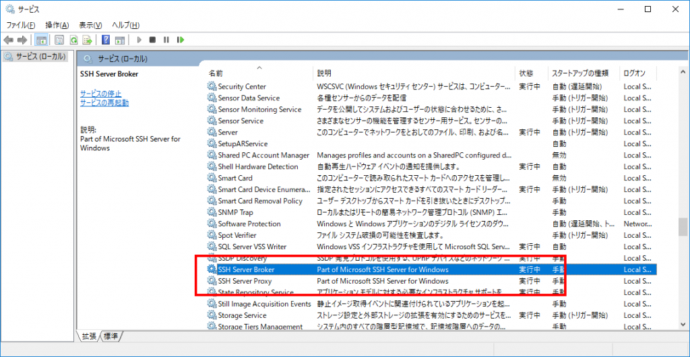

Introduction
Windows10のVirtualBox上に構築したDebian with Raspberry Pi Desktopに対して、ssh接続するのに少し嵌ったのでメモ。
How to do?
VirtualBox内の仮想マシンに外部からアクセスする場合、VirtualBoxのネットワーク設定をNATにした上で、指定したポートを仮想マシンにポートフォワードする必要がある。
通常、sshは22で待ち受けるので、ホストPCへの22宛の通信をゲストOSの22へフォワードすればよい。
が、これがうまくいかない。
外から、sshでホストPC宛に接続を試みても、
1 | Permission denied, please try again. |
というエラーが返ってくる。
そこで、下記のコマンドで、sshの接続に失敗したログを見てみる。
1 | cat /var/log/auth.log | grep 'sshd.\*Invalid' |
しかし、ログそのものが出力されていない。
こうなると、そもそもssh接続が仮想マシン側に到達していない、と考えるとが筋である。
なので、ポートフォワーディングを

のようにし、22ポート以外に変更する。
ssh接続も
1 | ssh <user>@<address> -p 222 |
に変更する。
こうすると上手くいった。
Why?
ポートフォーワーディングは転送元ポートと転送先ポートが同じでも問題ないはずである。
なのにそれが失敗したのは、ホスト側で別のアプリが22でLISTENしていたからだと考えられる。
なので、ホストPCでLISTENしているポートを調べてみた。
外部から22ポート宛にssh接続してみる。
1 | C:\Users\TAKUYA>netstat | find "22" |
なんか22ポート使っている奴がいる… Windows10端末で22ポートで待ち受けするアプリなぞ思い当たらないので、調べてみた。
下記の記事を発見。

{kind=link}
上の記事によると、
ハッキリしているのは、Windows 10（Desktop、Mobile、IoT）で開発者モードをオンにすると、SSH関連の2つのサービス（SSH Server Broker、SSH Server Proxy）が起動するようになるということだ。

確かに動いています。
気づかなかった…
{kind=link}
とりえあず、Windows10端末でssh接続する予定はないので、この2つのサービスの自動起動を無効、停止しました。